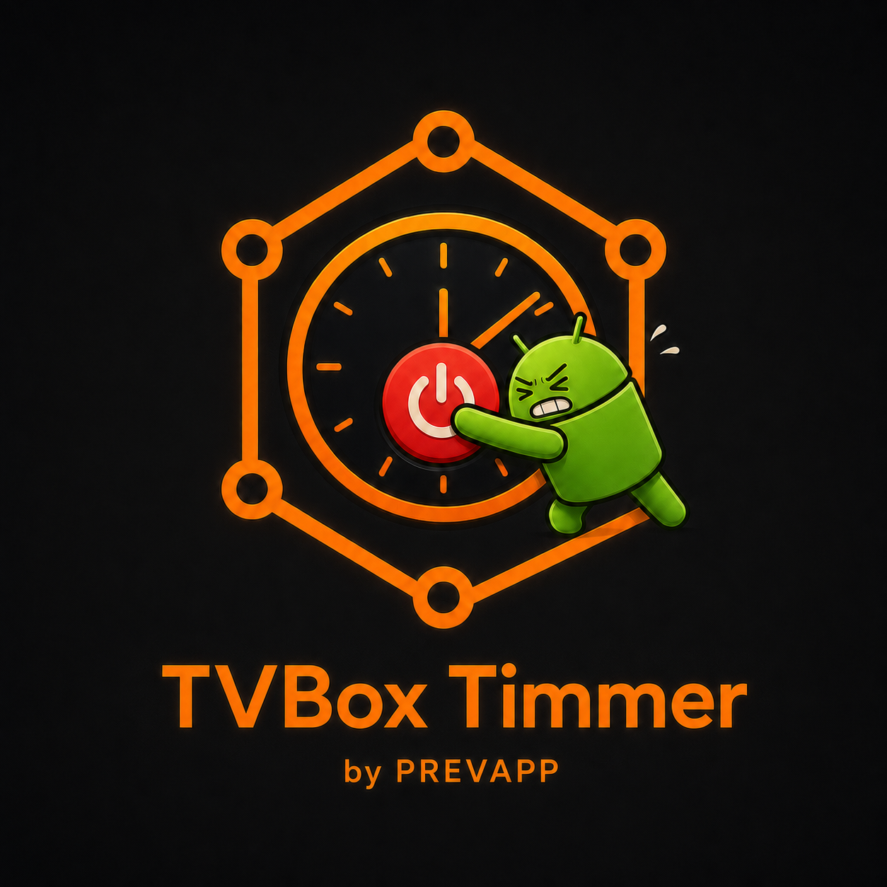

Temporizadores rápidos
Elegí 30, 60, 90 o 240 minutos con el control remoto.
PREVAPP presenta
Programá un tiempo, elegí una hora exacta y seguí mirando tu contenido. TVBox Timmer trabaja en segundo plano y te avisa un minuto antes.
¿Ya tenés la versión 2.1? Instalá la 2.2 directamente sobre ella: conserva la configuración y el permiso de Accesibilidad. Si todavía usás la 2.0, desinstalala antes de instalar esta versión.

Simple y directa
Elegí 30, 60, 90 o 240 minutos con el control remoto.
Indicá una hora HH:MM del día para realizar la suspensión.
Un aviso compacto y translúcido aparece un minuto antes y permite sumar 10 minutos.
Podés continuar viendo videos mientras el temporizador sigue activo.
Buscá, descargá e instalá nuevas versiones desde la propia aplicación.
Si Accesibilidad ya está activa, no vuelve a enviarte a los ajustes.
Instalación
Privacidad
Desde la versión 2.1, TVBox Timmer utiliza Unity LevelPlay y Unity Ads para mostrar publicidad. Estos servicios pueden procesar identificadores del dispositivo o de publicidad, dirección IP, información técnica, ubicación aproximada derivada de la IP e interacciones con los anuncios, de acuerdo con las preferencias elegidas dentro de la aplicación.
Podés elegir publicidad personalizada o limitada y cambiar la selección desde el botón Privacidad de anuncios. Consultá la política para usuarios de Unity.
El permiso de accesibilidad se utiliza únicamente para suspender el dispositivo y mostrar el aviso previo; no se utiliza para leer el contenido de la pantalla.